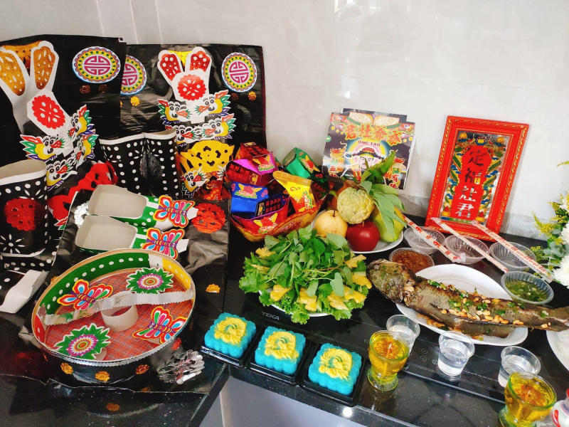
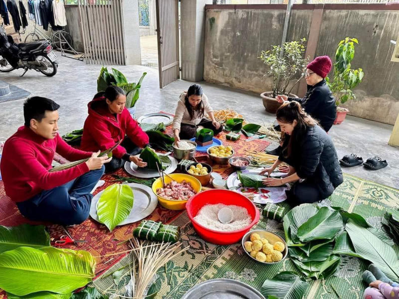

Giới Thiệu
Nguồn gốc của Tết Nguyên Đán gắn liền với truyền thuyết về con Lân - một linh vật huyền thoại trong văn hóa phương Đông. Theo truyền thuyết, Lân là con vật mang đến may mắn, tài lộc và xua đuổi tà ma. Ngày Tết Nguyên Đán được coi là ngày sinh nhật của Lân vì vậy người Việt Nam thường trang trí nhà cửa bằng hình ảnh của Lân để cầu mong một năm mới an khang, thịnh vượng. Ngoài ra, Tết Nguyên Đán còn có nguồn gốc từ thời nhà Hán khi Trung Quốc bắt đầu sử dụng lịch âm dương. Thời điểm chuyển giao giữa năm cũ và năm mới được coi là thời khắc giao thoa giữa âm và dương mang ý nghĩa đặc biệt quan trọng. Người Việt Nam chịu ảnh hưởng sâu sắc từ văn hóa Trung Hoa đã tiếp nhận và phát triển Tết Nguyên Đán thành một lễ hội truyền thống độc đáo. Không chỉ riêng Việt Nam, lễ hội ngày Tết Nguyên đán còn là một dịp lễ hội lớn được người dân nhiều nước Đông Nam Á như Malaysia, Singapore, Philippines, Indonesia... đón mừng trọng thể. Thậm chí, ở các quốc gia châu Á khác cũng có các nước ăn mừng Tết Nguyên Đán giống Việt Nam như Trung Quốc, Hàn Quốc, Mông Cổ, Triều Tiên, Ấn Độ, Bhutan..., Tết Nguyên đán cũng là một ngày lễ mang ý nghĩa đặc biệt, tô điểm thêm cho bức tranh văn hóa đa dạng của châu lục.
Phong Tục
Việt Nam ta có đa dạng các phong tục mỗi khi Tết đến Xuân về
Cúng ông Công, ông Táo
Gói bánh Chưng, bánh Tét
Đón pháo hoa giao thừa
Ẩm Thực
Tết là dịp để gia đình sum họp, con cháu thể hiện lòng thành kính tri ân, để vui vẻ hưởng thụ sau một năm làm việc vất vả và nguyện ước cho năm mới suôn sẻ, hạnh phúc, thành công. Tất cả những ý nghĩa này được thể hiện qua nhiều phương diện như cách trang trí, sắp xếp nhà cửa, phong tục đi cha, xin xăm đầu năm… và thể hiện qua cả ẩm thực. Có lẽ vì vậy mà người Việt ta xưa nay thường gọi là ăn Tết, hiếm ai lại gọi là lễ Tết. Mâm cỗ ẩm thực Việt Nam ngày Tết chính vì thế không chỉ đơn thuần là những món ăn, đồ uống mà còn thể hiện rất nhiều ý nghĩa tâm linh mang đậm nét truyền thống của người Việt nói riêng và người Á Đông nói chung.
Liên Hệ
Hãy gửi ý kiến đóng góp của bạn cho chúng tôi: